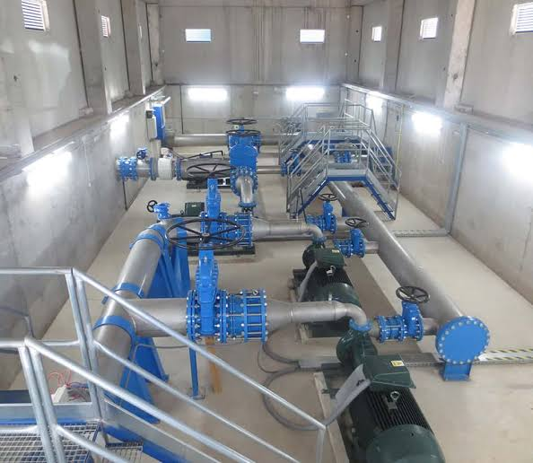

History
The history of wastewater treatment is a journey from simple survival to advanced environmental science. For thousands of years, humans relied on nature to handle their waste, but as cities grew, this approach became a public health crisis. Modern wastewater treatment is the invisible shield that protects our rivers, oceans, and communities from disease.
Ancient Civilizations: The First Channels (3000 BCE – 500 CE)
The earliest attempts to manage human waste were focused on convenience and odor control rather than sanitation or environmental protection.
- The Indus Valley Civilization: Around 2500 BCE, cities like Mohenjo-daro featured advanced brick-lined open
drains along the streets. Homes had private toilets that emptied into these sophisticated street drains.
The Dark Ages of Sanitation: The Great Stink and Disease (500 – 1850s)
After the fall of the Roman Empire, organized sanitation largely disappeared in Europe. For centuries, cities grew denser, and waste was routinely dumped into unpaved streets or local waterways.By the 19th century, the Industrial Revolution caused urban populations to explode, pushing systems to a breaking point.
- The Cholera Epidemics: Public consensus believed that diseases like cholera were spread by miasma (foul
air). In 1854, Dr. John Snow proved that cholera was actually a waterborne disease, tracing a London
outbreak to a public water pump contaminated by a nearby cesspool.
The Birth of Modern Engineering (Late 19th Century)
The late 1800s marked the transition from merely moving waste away from cities to actually treating it before disposal.
- Chemical Precipitation:
- Early engineers experimented with adding chemicals like lime and alum to sewage to bind with organic matter, allowing it to settle out as sludge.
- Intermittent Sand Filtration:
- Passing sewage through beds of sand became one of the first reliable biological treatment methods, utilizing natural soil bacteria to break down organic pollutants.